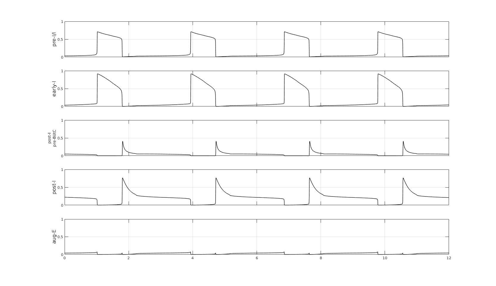

This is the readme for the models associated with the paper:
Ausborn J, Koizumi H, Barnett WH, John TT, Zhang R, Molkov YI, Smith JC, Rybak IA (2018) Organization of the core respiratory network: Insights from optogenetic and modeling studies. PLoS Comput Biol 14:e1006148 http://dx.doi.org/10.1371/journal.pcbi.1006148
This model was contributed by J Ausborn.
To run the matlab model type Ausborn_et_al_2018_PLOScompbiol at the matlab command prompt.
The model in it's default run will reproduce the figure 9C in the paper:

To reproduce other figures from the paper uncomment the associated labeled lines in Ausborn_et_al_2018_PLOScompbiol.m